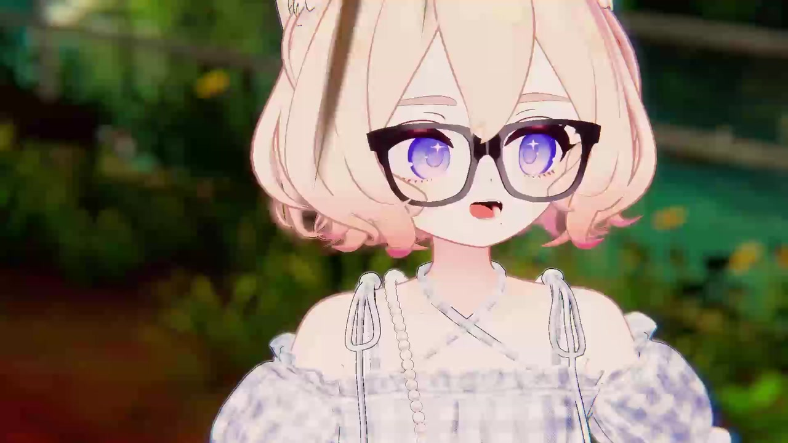
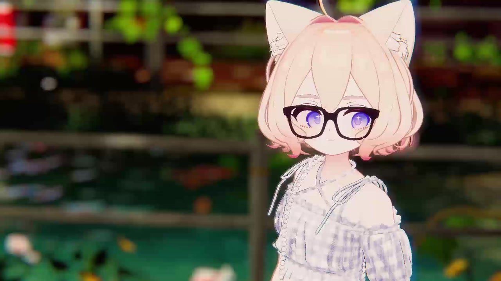

A LITTLE LUCK, A LITTLE EVERYDAY.
しらつめ
把可爱，藏进每一个日常。

01 HELLO, LITTLE ONE.
你好呀，
又见面了。
一蹦一跳的日常，
都想好好留下。
这里是一座小小的庭院。收集微笑、目光，还有那些不经意间，让人心软的瞬间。
02 JUST A LITTLE CLOSER.
心动，
有迹可循。
一个眼神，一次回眸。
都是想收藏的理由。
03 KEEP THE GOOD DAYS.
慢慢收集，
小小的喜欢。
让每一个平常的日子，
都有值得回看的理由。